Assignment 5
Tutorial for Neo4j
Neo4j is a native graph database that leverages data relationships as first-class entities. It's widely used for applications such as social networks, recommendation engines, and fraud detection.
We'll learn how to set up Neo4j, load data, and create visualizations using Cypher queries and the Neo4j Browser.
Prerequisites
Installing Neo4j
Software Requirements:
Neo4j requires Java 11 or later. OpenJDK and Oracle JDK are both supported.1.Download Neo4j:
Go to the Neo4j download page and download the appropriate version for your operating system. 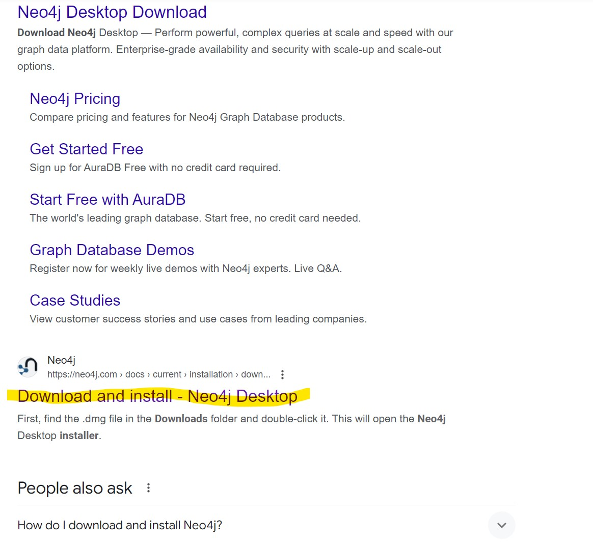After Clicking the desktop, the click the highted one(Deployed Center).
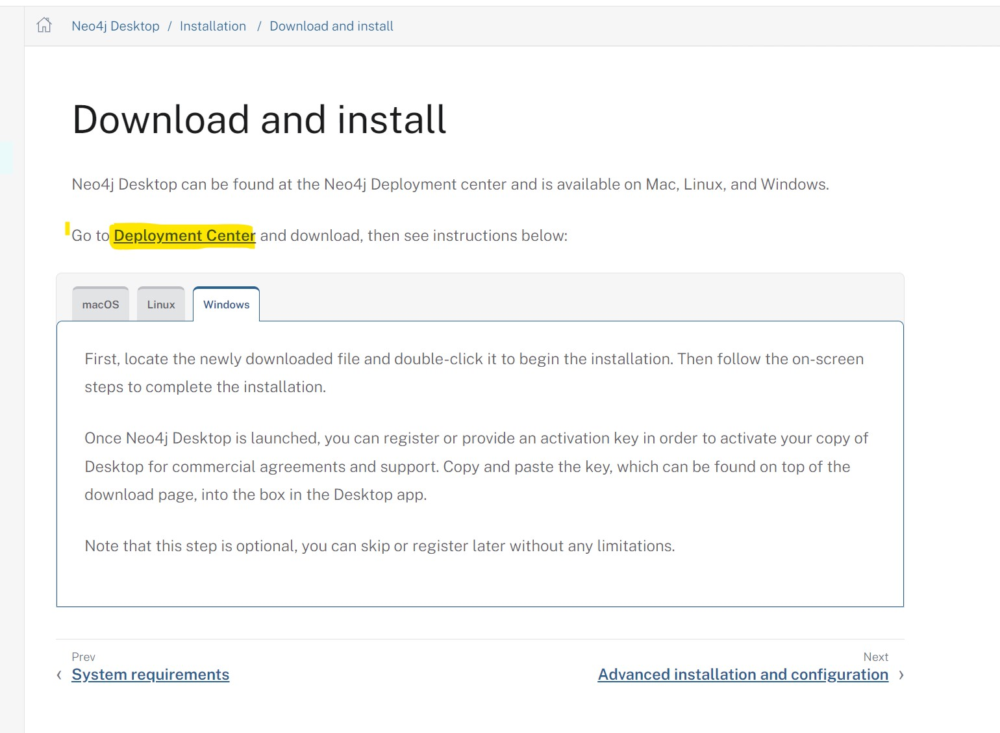Select your dropdown(Windows,Mac,Linux)
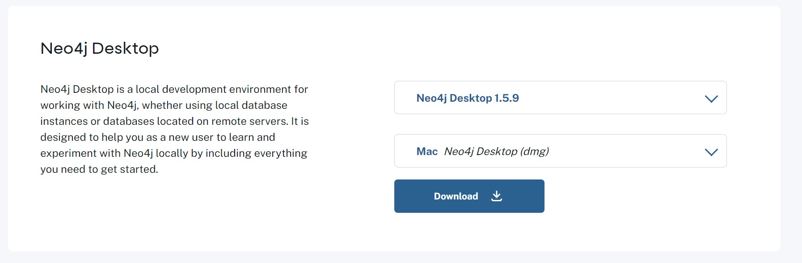2.Install Neo4j:
You can see the page,where we should fill then only it start's downloading. 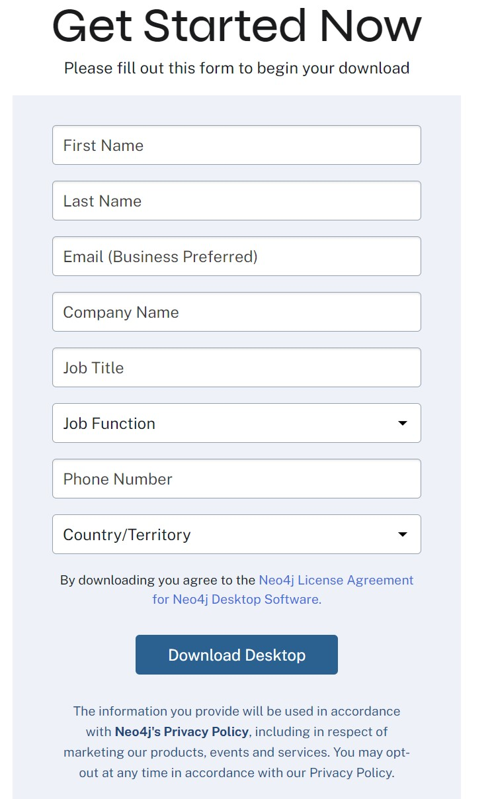It generates the Activate Key, Copy the key (copy to notepad)
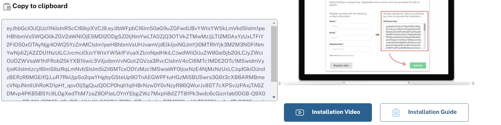3.Run Neo4j:
Start the Neo4j server.It ask to choose the sever, After that it ask the activation_key.
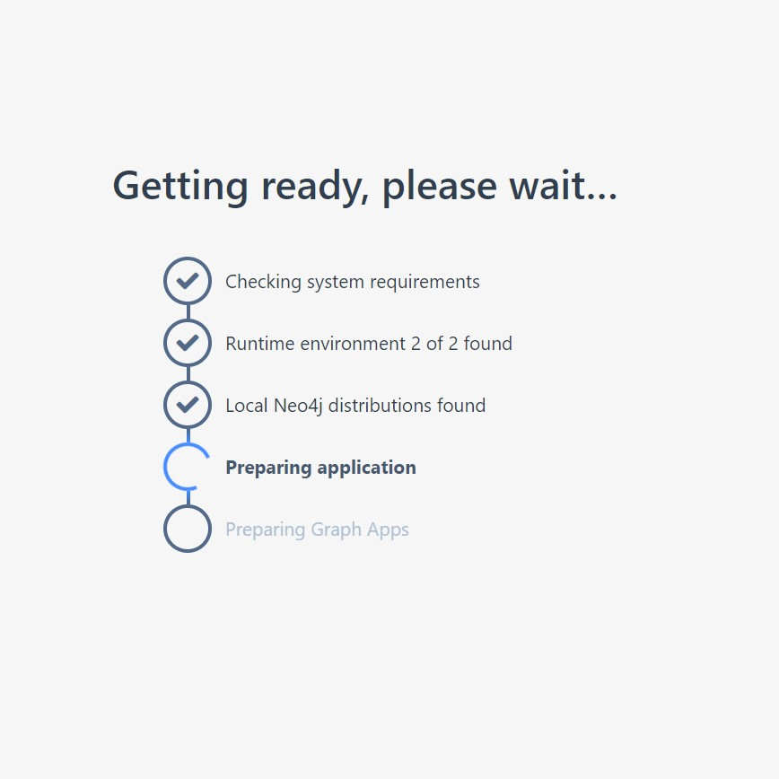It will open the desktop after all Prerequisites completed
Access Neo4j
We get the page with a example.
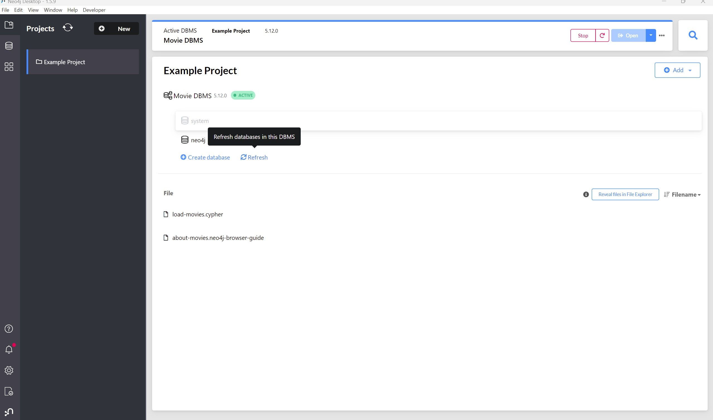Here, I am click "+ New" and taking smaple project(recommendation)
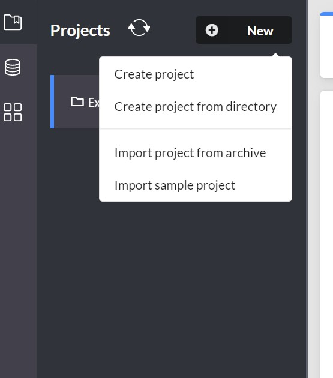It will install, after that it asks to create the password. After creating it will open other website for project.
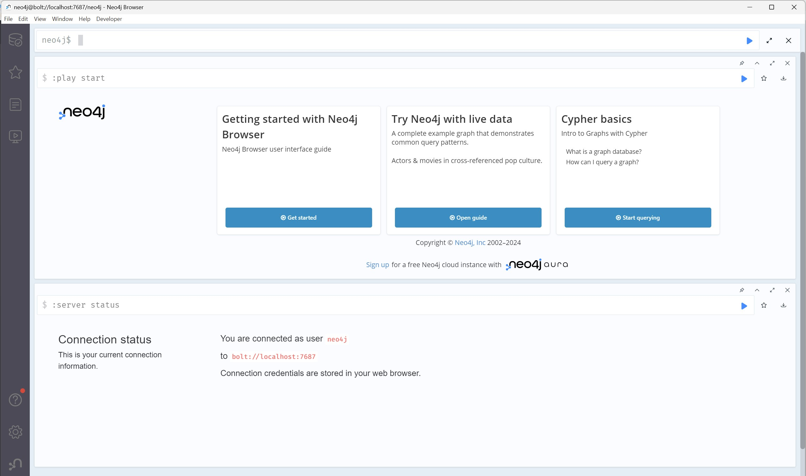Understand the data:
ncludes node labels such as Actor, Director, Genre, Movie, Person, and User, and relationship types like ACTED_IN, DIRECTED, IN_GENRE, and RATED. 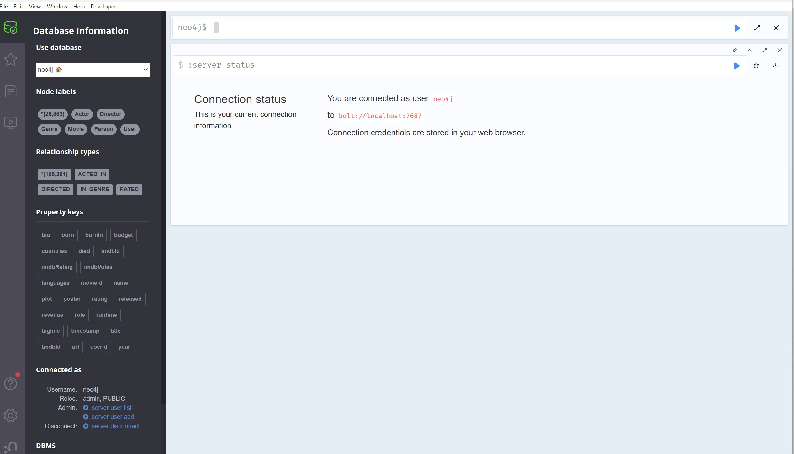Explore the data:
Before creating visualizations, let's explore the data with some basic Cypher queries. 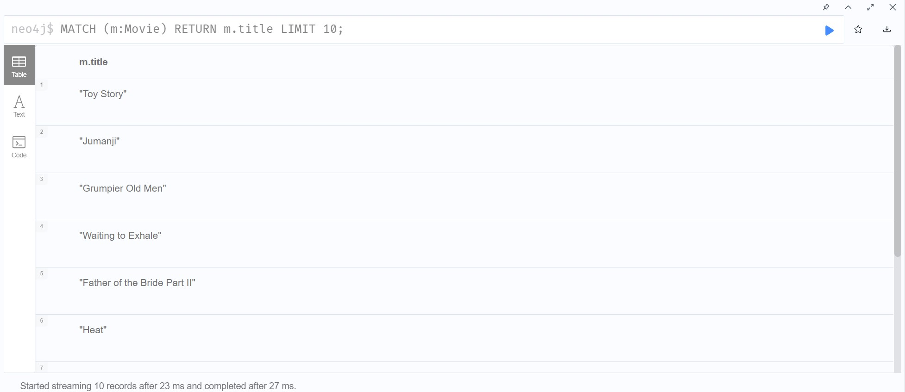Graph Visualizations
Create Visualizations:
Let's create some visualizations using the Neo4j Browser.It shows the relationships of nodes.
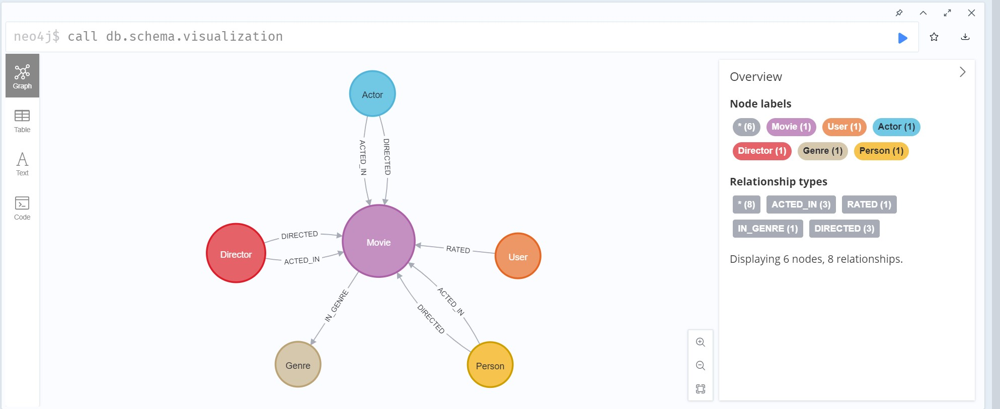Actors and Their Movies:
This query will return a visualization showing actors and the movies they have acted in. Customize the visualization: 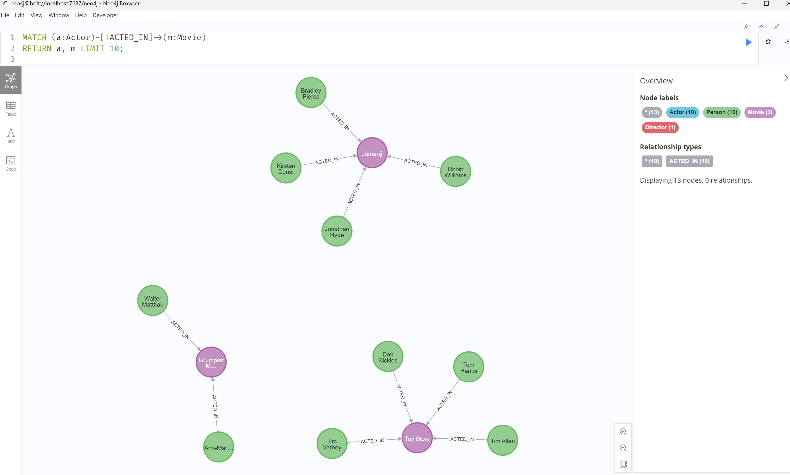Movies and Their Genres:
This will visualize movies and their genres. 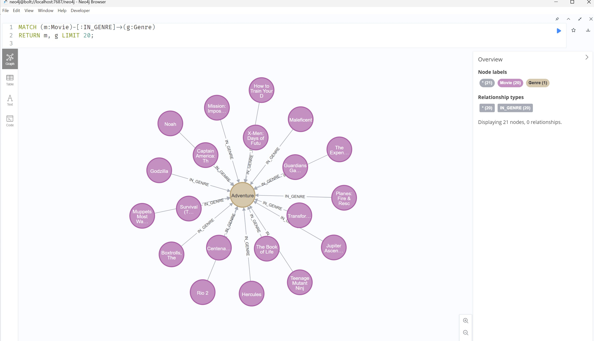Movies Rated by Users:
This query will show users and the movies they have rated, along with the rating values. 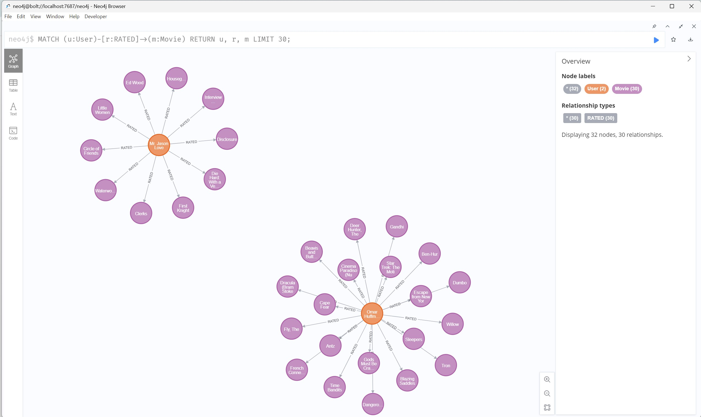Customize Visualizations
Click on Overview or (>), there we can change node colors, node sizes, relationships colors.
For example:
This query returns a graph of actors, the movies they acted in, and the directors of those movies. Customize the visualization.1.Node Colors:
Different colors for Actor, Movie, and Director.2.Node Sizes:
Based on the number of relationships.3.Relationships Colors:
Different colors for ACTED_IN and DIRECTED. 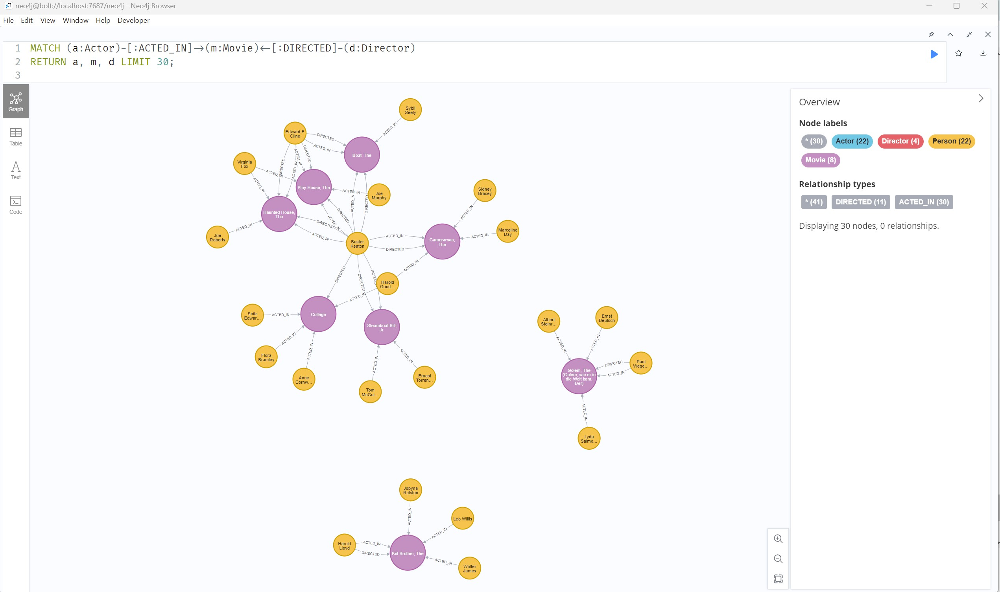Export and Share Visualizations
Export as Image:
Click the dowload icon to export the visualization as a PNG image or SVG.Conclusion
By following these steps, We can create insightful visualizations of our data using Neo4j. Neo4j's powerful query language and visualization tools make it easy to explore complex relationships in our data.